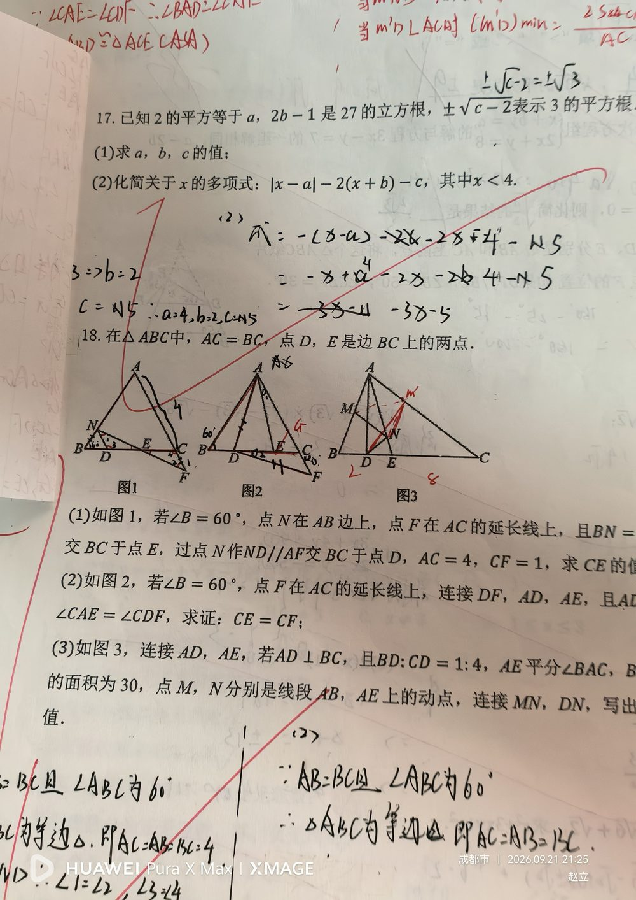

【共同条件】① △ABC 中 AC = BC（等腰）；② 点 D、E 是边 BC 上的两点。 【第(1)问】∠B = 60°；N 在 AB 边上；F 在 AC 的延长线上；ND ∥ AF 交 BC 于 D；AC = 4；CF = 1。 【第(2)问】∠B = 60°；F 在 AC 的延长线上；连接 DF、AD、AE；∠CAE = ∠CDF。 【第(3)问】AD ⊥ BC；BD : CD = 1 : 4；AE 平分 ∠BAC；S△ABC = 30；M、N 分别是线段 AB、AE 上的动点。
第(1)问：求 CE 的长； 第(2)问：求证 CE = CF； 第(3)问：求 MN + DN 的最小值。
【第(1)问】 ① ∵ AC = BC 且 ∠B = 60° ⇒ △ABC 是「等边三角形」 ⇒ AB = BC = AC = 4； ② 由 ND ∥ AF，利用平行线分线段成比例（或相似三角形）建立 BD : DC 与 BN : NA 的关系，再结合 F 在 AC 延长线上、CF = 1（⇒ AF = AC + CF = 5）逐步求出 CE。 （本题还需题干中那个 BN 的条件，请对照原书核对。） 【第(2)问】证明思路（角相等 ⇒ 三角形相似/全等 ⇒ 边相等）： ① 由 ∠B = 60° 且 AC = BC ⇒ △ABC 为等边三角形，∠ACB = ∠ABC = 60°； ② 目标 CE = CF，可考虑证 △ACE ≌ △DCF（或找中间量）： - 已知 ∠CAE = ∠CDF（对应角相等）； - 用等边三角形提供 60° 角 + 公共边/等边，凑齐 ASA 或 AAS； ③ 得 CE = CF。 【第(3)问】对称最值（将军饮马型）： ① 先由 AD ⊥ BC、BD : CD = 1 : 4 与 S△ABC = 30 求出各边长（设 BD = x, CD = 4x，由 BC·AD/2 = 30 与勾股关系解出）； ② AE 平分 ∠BAC ⇒ 可利用角平分线性质定 N 的位置范围； ③ 求 MN + DN 的最小值：作 D（或 M）关于直线 AE 的「对称点」，把 MN + DN 转化为「两点之间线段最短」，再求该线段长。
① 没有先由「AC = BC 且 ∠B = 60°」判断出「等边三角形」——这是三个小问共同的突破口； ② 第(1)问不知道用「平行 ⇒ 分线段成比例/相似」把已知长度联系起来； ③ 第(2)问把「∠CAE = ∠CDF」当成边相等用，忽略必须先用等边三角形补 60° 角； ④ 第(3)问看到「动点 + 求最小值」想不到「对称（将军饮马）模型」，硬解动点； ⑤ 第(3)问求边长时漏用面积条件 S△ABC = 30； ⑥ 三个小问共用同一图形条件，容易把上一问的条件带进下一问。
① 等腰三角形判定等边（有一个 60° 角的等腰三角形是等边三角形）； ② 平行线分线段成比例 + 相似三角形求线段长； ③ 全等三角形的判定（ASA / AAS）与性质； ④ 角平分线的性质； ⑤ 轴对称求最短路径（将军饮马模型）：两点之间线段最短； ⑥ 三角形面积公式结合比例求线段长。 📌 备注：本题第(1)问的「BN 条件」与第(3)问末尾要求，照片上不清晰，已在题干中标注，核对后可补充完整。